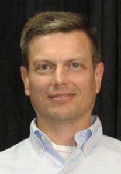

 Eric earned his B.S. degree at the University of Vermont (1989) and M.S. and Ph.D. degrees at the University of Massachusetts (1992,1996), all in Computer Science. At the University of Massachusetts, Eric was advised by Bruce Croft and was a member of the Center for Intelligent Information Retrieval.
Eric joined the IBM T.J. Watson Research lab in 1995 as a Research Staff Member, and has been a manager since 2004. While at IBM, Eric has conducted research in information retrieval, document categorization, text analysis, question answering, bio-informatics, and applications of automatic speech recognition.
Since 2007 Eric has been a technical lead on the DeepQA project at IBM and the application of automatic, open domain question answering to build the Watson Question Answering system. IBM's goal for Watson was to achieve human-level question answering performance which was realized on February 9, 2011 in a televised Jeopardy! show when Watson beat Ken Jennings and Brad Rutter.
Eric's role on the project has spanned architecture development, special question processing, and hardware planning and acquisition, and he is currently focused on commercialization. Eric has published numerous conference and journal papers, and holds several patents in the areas of text analysis and question answering.
Eric currently resides in New Fairfield, CT with his wife and three children.